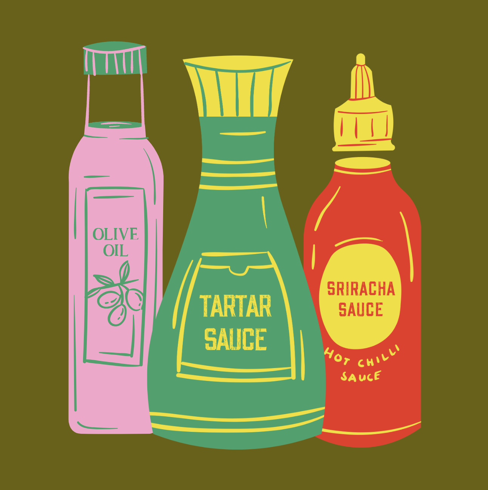

Welcome to
Cooking Club!
A place to find community through cuisine
Cooking Club was created with the intent of sharing the joy of cooking while teaching young adults the benefits of cooking their own food. Our resource provides individuals transitioning into adulthood with a diverse collection of fun and delicious meals that will encourage them to explore different cultures and flavors.
